<!--
  Brick City Capital / Case Study Page
  COLD counterpart to Leverage Homes, same portfolio system ("Architectural Narrative").
  - Warm --field hero, matching Leverage Homes and the older case studies (was obsidian).
  - Body stays on warm canvas so long copy is comfortable.
  - Same Client-First-style class names as the LH page / reuse the same Webflow classes.
  - Media areas are placeholder frames / swap .shot blocks for real .
-->
<meta charset="utf-8">
<meta name="viewport" content="width=device-width, initial-scale=1">
<title>Brick City Capital / Case Study</title>
<link rel="preconnect" href="https://fonts.googleapis.com">
<link rel="preconnect" href="https://fonts.gstatic.com" crossorigin>
<link href="https://fonts.googleapis.com/css2?family=Playfair+Display:wght@500;600;700&family=Inter:wght@400;600;800&family=Manrope:wght@400;500;600&display=swap" rel="stylesheet">

<style>
  :root {
    --canvas: #F5F2EE;
    --ink: #141414;
    --slate: #5D737E;
    --olive: #707A5E;
    --warm-gray: #8D8D8D;
    --link-hover: #51656F;   /* slate, darkened to clear AA on canvas and field */
    --obsidian: #1A1A1A;
    --field: #EBE8E4;
    --hairline: #D8D3CB;
    --muted: #4C4A47;

    /* dark-treatment tones */
    --dark-field: #242320;
    --dark-line: #302E2B;
    --on-dark: #F5F2EE;
    --on-dark-muted: rgba(245,242,238,0.72);

    --container-max: 1200px;
    --gutter: 32px;
    --section-pad: 80px;
    --stack-sm: 8px;
    --stack-md: 16px;
    --stack-lg: 48px;
  }

  * { box-sizing: border-box; }
  /* The nav is fixed at 68px, and nothing offset the anchor targets, so every in-page jump
     (#work, #about, #contact, and the case-study nav links back to index.html#work) landed
     the target flush at the viewport top, underneath the nav. scroll-padding-top on the
     scroll container fixes all of them at once; per-element scroll-margin would need adding
     to every new anchor. 88px is the nav plus 20px of air. */
  html { scroll-behavior: smooth; scroll-padding-top: 88px; }
  body { margin: 0; background: var(--canvas); color: var(--ink); font-family: "Inter", sans-serif; -webkit-font-smoothing: antialiased; font-size: 16px; line-height: 26px; }
  img { display: block; max-width: 100%; }

  .padding-global { padding-left: var(--gutter); padding-right: var(--gutter); }
  .container-large { max-width: var(--container-max); margin: 0 auto; width: 100%; }
  .section { padding-top: var(--section-pad); padding-bottom: var(--section-pad); }

  .display-name { font-family: "Inter", sans-serif; font-weight: 800; font-size: 80px; line-height: 0.98; letter-spacing: -0.02em; text-transform: uppercase; margin: 0; }
  .statement { font-family: "Playfair Display", serif; font-weight: 600; font-size: 44px; line-height: 52px; margin: 0; }
  /* HEADLINES ARE SANS. Playfair stays for the display and editorial moments — the 44px hero
     statement, pull quotes, stat numbers — but not for headlines, which are full sentences a
     reader actually reads. Ryan: "it's just hard to read actual content with this font".
     The tell was that .headline-lg is stepped DOWN to 36px inside a two-column row, i.e.
     Playfair used below the size a Didone wants, for layout reasons. Inter 600 with -0.02em
     tracking reads instantly and sits in a clear hierarchy under the Playfair statement. */
  .headline-lg { font-family: "Inter", sans-serif; font-weight: 600; font-size: 44px; line-height: 54px; letter-spacing: -0.02em; margin: 0; }
  .headline-md { font-family: "Inter", sans-serif; font-weight: 600; font-size: 30px; line-height: 40px; letter-spacing: -0.02em; margin: 0; }
  .body-lg { font-size: 20px; line-height: 32px; }
  .body-md { font-size: 16px; line-height: 26px; }
  .ui-label { font-size: 12px; line-height: 16px; font-weight: 600; letter-spacing: 0.1em; text-transform: uppercase; }
  .caption { font-size: 14px; line-height: 20px; color: var(--warm-gray); }
  .measure { max-width: 62ch; }
  .section--flush-top { padding-top: 0; }
  .eyebrow-muted { color: var(--warm-gray); margin-bottom: var(--stack-lg); }

  /* Bullet markers. These were 8px and colour-coded by beat (slate / olive / warm-gray) via
     .dot--ux / --growth / --systems, but nothing on the page explained the code, so the colour
     read as decoration rather than information. One colour, matching the text it belongs to,
     and a smaller mark so the dot supports the line instead of competing with it. The
     .dot--* classes are still on the markup; they now resolve to the same thing. */
  .dot { width: 6px; height: 6px; border-radius: 50%; display: inline-block; flex: 0 0 6px; background: var(--ink); }

  /* HERO. Was obsidian; Ryan asked for the same ground as every other page, so it is now the
     warm --field tone that Leverage Homes and the older case studies use. Every on-dark colour
     in here had to flip with it, and nav--over-dark came off the markup, or the nav would have
     been light text on a light hero. --obsidian now appears ONLY in the footer. */
  .hero { position: relative; background: var(--field); padding-top: calc(var(--section-pad) + 68px); padding-bottom: var(--section-pad); overflow: hidden; }
  .hero-topo { position: absolute; top: -30px; right: -40px; width: 640px; max-width: 66%; opacity: 0.06; pointer-events: none; }
  .hero-eyebrow { display: flex; align-items: center; gap: var(--stack-md); color: var(--ink); margin-bottom: var(--stack-lg); }
  /* 30ch = 840px in real Playfair, and the statement sets in THREE lines at 1440. This comment
     has been wrong twice: it said "three" in August, was "corrected" to four on Sept 14, and both
     numbers came from a render harness that was silently not loading the webfonts at all. Three
     is the measured truth with the fonts actually applied. If the statement is reworded, measure
     it with herochk.js against a render built by the FIXED mkrender.js. */
  .hero-statement { margin-top: var(--stack-lg); max-width: 30ch; }
  /* .hero-sub removed with the deck itself: the scope list it carried is already the
     context strip's Scope row, two rows below, and "speed and transparency" is restated in
     the body copy further down the page. */

  /* Context strip */
  .context { display: flex; flex-wrap: wrap; margin-top: 64px; }
  .context-item { flex: 1 1 200px; padding: 24px var(--gutter) 24px 0; }
  .context-item + .context-item { padding-left: var(--gutter); }
  .context-item .ui-label { color: var(--warm-gray); display: block; margin-bottom: var(--stack-sm); }
  /* Context-strip VALUES are data, not display: "UX Manager, full brand ownership",
     "~12 months", "Brand \u00b7 Web \u00b7 SEO". They were Playfair at 20px, which is the same
     Didone-too-small problem as the old figure titles and headlines, and it sat directly
     under the hero. Inter 500 at 19px. Playfair is reserved for the display and editorial
     moments now: the 44px statement, pull quotes, stat numbers, card titles, the footer. */
  .context-item .val { font-family: "Inter", sans-serif; font-weight: 500; font-size: 19px; line-height: 27px; letter-spacing: -0.01em; }
  .status-live { color: var(--slate); display: flex; align-items: center; gap: 8px; }

  .setup .headline-md { margin-bottom: var(--stack-lg); }

  /* Tonal rhythm, matching Leverage Homes. Beats alternate between canvas and field
     so the page is not one flat color. The tone change carries the section break,
     so no hairline between beats. */
  .beat--tint { background: var(--field); }
  .beat-eyebrow { display: flex; align-items: center; gap: var(--stack-md); color: var(--ink); margin-bottom: var(--stack-md); }
  .beat-eyebrow .idx { color: var(--warm-gray); }
  .beat-head { max-width: 24ch; margin-bottom: var(--stack-lg); }
  .beat-copy { color: var(--ink); margin-bottom: var(--stack-lg); }
  /* Editorial two-column intro: headline left, body right. Matches Leverage Homes.
     Keeps body copy at a readable measure while the pair fills the container. */
  .intro-cols { display: grid; grid-template-columns: 4fr 6fr; gap: var(--stack-lg) 64px;
    align-items: start; margin-bottom: 64px; }
  .intro-cols .headline-lg { font-size: 32px; line-height: 42px; }
  .intro-cols .headline-md { font-size: 26px; line-height: 34px; }
  .intro-cols > :first-child { margin-bottom: 0; }
  .intro-cols .beat-copy, .intro-cols .body-lg { margin: 0; max-width: none; }
  .intro-cols .intro-body p + p { margin-top: var(--stack-md); }
  @media (max-width: 900px) { .intro-cols { grid-template-columns: 1fr; } }

  /* Enumerated builds, used where a screenshot would show nothing readable. */
  .builds { margin-top: var(--stack-lg); display: flex; flex-wrap: wrap; }
  .build-item { flex: 1 1 240px; padding: 0 var(--gutter) 0 0; }
  .build-item + .build-item { padding-left: var(--gutter); }
  /* These four were 12px uppercase .ui-label, which put a real subtitle in the same voice as a
     caption or a chip. They title the four columns beneath .diagram-title (20px), so they are a
     step below it: same weight, sentence case, distinguished from the 16px body by weight
     rather than by shouting. */
  .build-item-title { font-family: "Inter", sans-serif; font-weight: 600; font-size: 16px;
    line-height: 24px; letter-spacing: -0.01em; color: var(--ink); display: block;
    margin-bottom: var(--stack-sm); }
  .build-item p { color: var(--muted); margin: 0; }
  /* The four labels wrap to different line counts, so the four bodies started at different
     heights and the row read ragged. Reserving the worst-case label height puts the bodies on a
     shared baseline. The values are the measured maximums at each band, so RE-MEASURE with
     lbl.js if any label is reworded. Off below 481px, where the items stack one per row and the
     reserved space would just be a hole. */
  @media (min-width: 481px) { .build-item-title { min-height: 48px; } }
  @media (min-width: 901px) and (max-width: 1100px) { .build-item-title { min-height: 72px; } }
  /* Annotated full state page: the whole page on the left at a size meant to be seen rather
     than read, with each framework section named beside it. Note tops are percentages of the
     image, so they hold at any width. Stacks below 860px. */
  /* HALF AND HALF. The page screenshot was 400px in a fixed column, which made a 4220px-tall
     page unreadably small. Both columns are now equal, so the screenshot is big enough to see.
     align-items must STAY stretch (the default) rather than start: the row height comes from the
     image, .td-notes stretches to match, and the percentage tops on .td-note resolve against
     that. The old fixed min-height: 1199px was the image height at 400px wide and would be
     wrong at any other size, so it is gone. Do not put it back and do not set align-items:start. */
  .teardown { margin-top: var(--stack-lg); display: grid;
    grid-template-columns: minmax(0, 1fr) minmax(0, 1fr); gap: 48px; }
  /* The width and height ATTRIBUTES on this img are load-bearing, not decoration. The row
     height comes from the image and .td-notes stretches to match it, so without the intrinsic
     ratio reserved up front a lazy image that has not fetched yet gives the row zero height and
     every note collapses to the top and overlaps. Measured: 4 overlaps before, 0 after. */
  .td-page img { width: 100%; height: auto; display: block; border: 1px solid var(--hairline); }
  .td-notes { position: relative; }
  .td-note { position: absolute; left: 0; right: 0; padding-left: 46px; }
  /* The leader spans the 48px gap and stops 10px short of the number, so it never runs
     through the digits. Do not widen it past 38px. */
  .td-note::before { content: ""; position: absolute; left: -48px; top: 0.55em; width: 38px;
    height: 1px; background: var(--hairline); }
  .td-idx { position: absolute; left: 0; top: 0; color: var(--warm-gray); }
  .td-name { display: block; color: var(--ink); margin-bottom: var(--stack-sm); }
  .td-note p { color: var(--muted); margin: 0; max-width: 52ch; }
  @media (max-width: 860px) {
    .teardown { grid-template-columns: minmax(0, 1fr); gap: var(--stack-lg); }
    .td-notes { min-height: 0; }
    .td-note { position: static !important; padding-left: 46px; margin-bottom: var(--stack-lg); }
    .td-note::before { display: none; }
  }

  /* Hand-built diagrams, drawn in the Brick City brand system. */
  .frame.has-diagram { aspect-ratio: auto; padding: 28px; background: #fff; }
  .frame.has-diagram svg { width: 100%; height: auto; display: block; }
  /* FIGURE TITLES ARE NOT LABELS, AND NOT DISPLAY TYPE EITHER. They were 12px uppercase
     .ui-label, which misrepresented sentences averaging 6.3 words as category markers. They
     were then Playfair 24px, which Ryan rejected on sight and he was right: Playfair is a
     Didone, its thick/thin contrast is the point at 44-48px and its hairlines go spindly at
     24. HIS RULE, worth keeping: Playfair is for the big, display, artistic moments only.
     A figure title is functional — it names a screenshot — so it belongs in the interface
     voice. Inter 600 at 20px is legible small, and is unmistakably a third thing next to the
     12px label and the Playfair headline. */
  .diagram-title { font-family: "Inter", sans-serif; font-weight: 600; font-size: 20px;
    line-height: 28px; letter-spacing: -0.01em; text-transform: none; color: var(--ink);
    margin-bottom: var(--stack-md); }
  @media (max-width: 720px) { .diagram-title { font-size: 18px; line-height: 26px; } }
  .section-shot { margin-top: var(--stack-lg); }
  /* Diagrams use the BRICK CITY brand system: square edges, gold accent, warm gray,
     Manrope. Leverage Homes diagrams use its own system (Poppins), per HANDOFF.
     .bc-tag stays monospace on purpose. Do not swap these to the portfolio typefaces. */
  .bc-lb { font-family: "Manrope", sans-serif; font-size: 14px; font-weight: 400; fill: #131313; }
  .bc-tag { font-family: ui-monospace, Menlo, monospace; font-size: 11.5px; fill: #5C5551; }
  /* The tag is underlined with text-decoration rather than a drawn <line>, because .bc-tag
     resolves through a SYSTEM monospace stack (ui-monospace, Menlo, monospace) that is a
     different face on Ryan's Mac than in the headless container. A fixed-width line measured
     here would over- or under-shoot the word there; a text underline is sized by the browser
     from the glyphs it actually drew. The underline takes its color from fill. */
  .bc-thread { fill: #BC983B; text-decoration: underline;
    text-decoration-thickness: 1.5px; text-underline-offset: 4px; }
  .bc-btn { font-family: "Manrope", sans-serif; font-size: 11.5px; font-weight: 600;
    letter-spacing: 0.06em; fill: #ffffff; }
  .bc-fl { font-family: "Manrope", sans-serif; font-size: 11px; font-weight: 600;
    letter-spacing: 0.08em; text-transform: uppercase; fill: #5C5551; }
  .bc-step { font-family: "Manrope", sans-serif; font-size: 11px; font-weight: 600;
    letter-spacing: 0.08em; fill: #5C5551; }
  .bc-cap { font-family: "Manrope", sans-serif; font-size: 15px; font-weight: 600; fill: #131313; }
  .bc-rule { stroke: #E3E8ED; stroke-width: 1; }
  .bc-arrow { stroke: #5C5551; stroke-width: 1.5; fill: none; }
  .bc-panel { fill: #ffffff; stroke: #E3E8ED; stroke-width: 1.5; }
  .bc-fill { fill: #EEF1F4; }
  .bc-accent { fill: #BC983B; }
  /* Brick City Capital design system, drawn rather than screenshotted so it stays legible
     at full width. Every name, class and value here was read from the live Webflow
     project through the Webflow MCP, not transcribed by eye. See HANDOFF before editing. */
  .ds-col { font-family: "Manrope", sans-serif; font-size: 12px; font-weight: 600;
    letter-spacing: 0.1em; text-transform: uppercase; fill: #131313; }
  .ds-note { font-family: "Manrope", sans-serif; font-size: 12px; font-weight: 500; fill: #5C5551; }
  .ds-tok { font-family: "Manrope", sans-serif; font-size: 13px; font-weight: 600; fill: #131313; }
  .ds-hex { font-family: ui-monospace, Menlo, monospace; font-size: 11.5px; fill: #5C5551; }
  .ds-cls { font-family: ui-monospace, Menlo, monospace; font-size: 11px; fill: #5C5551; }
  /* On the dark chip the warm gray sits at about 1.9:1 and cannot be read, so labels over
     #131313 go white. That is color-neutral-0, so it stays on system. */
  .ds-cls.is-ondark { fill: #FFFFFF; }
  .ds-rule { stroke: #131313; stroke-width: 1; }
  .ds-hair { stroke: #ebe7e7; stroke-width: 1; }
  .ds-sw { stroke: #ebe7e7; stroke-width: 1; }
  .ds-specimen { font-family: "Manrope", sans-serif; font-size: 76px; font-weight: 700;
    letter-spacing: -0.04em; fill: #131313; }
  .ds-gold { fill: #BC983B; }
  .ds-white { fill: #ffffff; }
  .ds-darkchip { fill: #131313; }
  .ds-btn-dark { font-family: "Manrope", sans-serif; font-size: 12px; font-weight: 700;
    fill: #131313; text-anchor: middle; }
  /* Gold buttons always carry WHITE text on this brand, verified against the live nav. */
  .ds-btn-light { font-family: "Manrope", sans-serif; font-size: 12px; font-weight: 700;
    fill: #ffffff; text-anchor: middle; }
  .ds-eyebrow { font-family: "Manrope", sans-serif; font-size: 12px; font-weight: 600;
    letter-spacing: 0.12em; fill: #BC983B; }
  .ds-card { fill: #fcf9f8; stroke: #ebe7e7; stroke-width: 1; }
  .ds-card-h { font-family: "Manrope", sans-serif; font-size: 16px; font-weight: 600; fill: #131313; }
  .ds-line { fill: #ebe7e7; }
  .ds-stat-l { font-family: "Manrope", sans-serif; font-size: 11px; font-weight: 600;
    letter-spacing: 0.1em; fill: #4c6173; }
  .ds-stat-v { font-family: "Manrope", sans-serif; font-size: 20px; font-weight: 700;
    fill: #131313; text-anchor: end; }

  /* Media frames / light portfolio theme (brand shows through the screenshots) */
  .frame { background: var(--field); border: 1px solid var(--hairline); padding: 28px; display: flex; align-items: center; justify-content: center; }
  /* 16:9 only shapes EMPTY anchor placeholders. */
  .frame.is-anchor:not(.has-img) { aspect-ratio: 16 / 9; }
  /* Full-page captures are cropped in CSS rather than in the file, so the window can be
     retuned without re-exporting. object-position picks which band of the page shows. */
  .frame.has-img { padding: 0; background: transparent; min-width: 0; }
  .frame.has-img img { width: 100%; height: 100%; object-fit: cover; display: block; }
  .frame.has-img img { object-position: center top; }
  /* Crops now live in the FILES, cut to each frame's job. A frame marked .is-exact takes
     the image's own height so CSS never crops a second time. Gallery tiles are 2:1 and
     their files are cut to exactly 2:1, so cover has nothing to trim. */
  .frame.has-img.is-exact { aspect-ratio: auto; }
  .frame.has-img.is-exact img { height: auto; }
  /* Gallery image tiles hug their file: no padding, just the hairline border, and the
     frame takes the image's own height. Tops align; a shorter page simply makes a
     shorter box. Placeholders stretch to the row so the row still reads as a row. */
  .gallery .frame.has-img { aspect-ratio: auto; padding: 0; }
  .gallery .frame.has-img img { height: auto; }
  /* aspect-ratio MUST be cleared here: with align-self stretch the height becomes
     definite, and 16/9 would then derive the WIDTH from it and overflow the column. */
  .gallery .frame:not(.has-img) { aspect-ratio: auto; align-self: stretch; min-height: 220px; }
  .shot { background: #fff; border: 1px solid var(--hairline); width: 100%; height: 100%; min-height: 120px; display: flex; align-items: center; justify-content: center; text-align: center; padding: 20px; }
  .shot .ui-label { color: var(--warm-gray); }
  .frame-caption { color: var(--warm-gray); margin-top: var(--stack-md); }

  .anchor { position: relative; margin-bottom: 64px; }
  /* Callouts belong to the image ABOVE them, so they sit tight to it (16px) and the clear
     air goes on .anchor's bottom instead. At 48px top they floated between two images and it
     was not clear which one they described. Matches leverage-homes.html exactly. */
  /* margin-bottom lives on the callouts, not only on .anchor, because callout lists also
     appear inside .section-shot and as direct children of .container-large. Those two do not
     get .anchor's bottom margin, so without this they sat 48px from the next image while the
     anchor ones sat at 64px. Margins collapse, so this never stacks with the next element. */
  .callout-list { margin-top: var(--stack-md); margin-bottom: 64px; display: grid; grid-template-columns: 1fr 1fr; gap: var(--stack-md) var(--gutter); }
  .callout { display: flex; align-items: flex-start; gap: 10px; }
  /* An anchor whose artifact is tall and narrow, like an email. The image keeps its own
     width and the callouts sit beside it instead of underneath. */
  .callout .dot { margin-top: 10px; }  /* (26px line - 6px dot) / 2, so it centres on the first line */
  .callout .ct { color: var(--ink); }
  .callout .ct b { font-weight: 600; }

  .gallery { margin-top: var(--stack-lg); display: grid; grid-template-columns: repeat(3, minmax(0, 1fr)); gap: var(--gutter); align-items: start; }
  .gallery--two { grid-template-columns: repeat(2, minmax(0, 1fr)); }
  .gallery .frame { aspect-ratio: 16 / 9; padding: 16px; }
  .gallery .shot { min-height: 0; }
  /* 72ch, MEASURED IN THE REAL FONT. This was 86ch, chosen when the render harness was
     silently failing to load the webfonts, so it was tuned against fallback metrics: 86ch
     looked like 670px / 99 characters per line and is actually 774px / 105, well past the
     ~90 ceiling it was meant to hit. 72ch is 648px / 88cpl with the real Inter, and the
     longest caption still sets in five lines. Re-measure with captest2.js, never by eye. */
  .gallery-note { margin-top: var(--stack-md); max-width: 72ch; }
  /* Three states side by side, each with one quoted line from its own page underneath.
     The quote exists because body copy inside a 379px tile renders at about 4px, so the
     row could show that the pages differ without letting anyone read how. The screenshot
     carries the shape, the quote carries the evidence. Quotes stay with their tile at
     every breakpoint, which is why this is its own grid rather than a .gallery. */
  /* Two columns rather than three: at 584px a state page heading renders about 20.7px
     against 13.5px at 379px. New Jersey is not in this row on purpose, since the teardown
     directly below shows that whole page annotated. Adding a third tile here would both
     shrink the type and show New Jersey twice. */
  .states3 { margin-top: var(--stack-lg); display: grid;
    grid-template-columns: repeat(2, minmax(0, 1fr)); gap: var(--gutter); align-items: start; }
  .state-item { margin: 0; min-width: 0; }
  .state-item .frame.has-img { aspect-ratio: auto; padding: 0; }
  .state-item .frame.has-img img { height: auto; }
  .state-item figcaption { padding-top: var(--stack-md); }
  .state-item .ui-label { display: block; color: var(--warm-gray);
    margin-bottom: var(--stack-sm); }
  /* Quoted lines lifted from a real state document. The curly quotes already signal that it is
     a quotation, so the serif was doing no work the punctuation wasn't — and 18px was the
     smallest Playfair anywhere on the site. Inter 500 keeps the lift over 16px body copy. */
  .state-quote { font-family: "Inter", sans-serif; font-weight: 500;
    font-size: 18px; line-height: 26px; letter-spacing: -0.01em; color: var(--ink); margin: 0; }
  @media (max-width: 560px) { .states3 { grid-template-columns: minmax(0, 1fr); } }

  /* CLOSE / light (matches portfolio theme) */
  /* 20ch put Ryan's rewritten closing line on FIVE lines of 48px display. 30ch lands it on
     three and is the same measure as .hero-statement, so the two display lines that bookend
     the page share a width. Re-check the line count if this sentence is reworded. */
  .close .headline-lg { max-width: 30ch; margin-bottom: var(--stack-lg); }
  .close .body-lg { color: var(--muted); max-width: 60ch; }
  .close-actions { margin-top: var(--stack-lg); display: flex; gap: var(--stack-md); flex-wrap: wrap; }

  .btn { display: inline-flex; align-items: center; padding: 14px 32px; text-decoration: none; border: 1px solid transparent; }
  .btn-primary { background: var(--slate); color: #fff; }
  .btn-primary:hover { background: #536771; }
  .btn-ghost { border-color: var(--ink); color: var(--ink); }
  .btn-ghost:hover { background: var(--ink); color: var(--canvas); }

  .credits { border-top: 1px solid var(--hairline); }
  .credits .caption { max-width: 60ch; }

  a:focus-visible, .btn:focus-visible { outline: 2px solid var(--slate); outline-offset: 3px; }
  @media (prefers-reduced-motion: reduce) { html { scroll-behavior: auto; } * { transition: none !important; } }

  @media (max-width: 900px) {
    .gallery { grid-template-columns: repeat(2, minmax(0, 1fr)); }
    .callout-list { grid-template-columns: 1fr; }
  }
  @media (max-width: 640px) {
    :root { --gutter: 24px; --section-pad: 40px; }
    .display-name { font-size: 44px; }
    .statement { font-size: 28px; line-height: 34px; }
    .headline-lg { font-size: 30px; line-height: 38px; }
    .headline-md { font-size: 25px; line-height: 33px; }
    .body-lg { font-size: 18px; line-height: 29px; }
    .context-item + .context-item { padding-left: 0; }
    .gallery { grid-template-columns: minmax(0, 1fr) minmax(0, 1fr); }
  }

  /* NAV */
  .nav { position: fixed; top: 0; left: 0; right: 0; z-index: 50; background: transparent; transition: background .3s ease, border-color .3s ease; border-bottom: 1px solid transparent; }
  .nav.is-scrolled { background: rgba(245,242,238,0.95); border-bottom: 1px solid var(--hairline); }
  .nav-inner { display: flex; align-items: center; justify-content: space-between; height: 68px; }
  .nav-name { font-weight: 600; font-size: 15px; letter-spacing: 0.02em; text-decoration: none; color: var(--ink); }
  .nav-links { display: flex; gap: 32px; }
  /* Nav hover is a COLOUR SHIFT, not a growing underline. --link-hover is the site's slate
     darkened from #5D737E: slate itself measures 4.46:1 on the canvas and 4.08:1 on the tinted
     hero, both under the 4.5:1 AA floor for 16px text. #51656F is the same hue and clears it on
     both (5.47:1 and 5.00:1). Focus is still handled by the global a:focus-visible outline, so
     removing the underline costs nothing for keyboard users. */
  .nav-links a { color: var(--ink); text-decoration: none; transition: color .2s ease; }
  .nav-links a:hover, .nav-links a:focus-visible { color: var(--link-hover); }
  /* dark hero: light nav text until scrolled to the solid canvas bar */
  .nav--over-dark .nav-name, .nav--over-dark .nav-links a { color: var(--on-dark); }
  .nav--over-dark.is-scrolled .nav-name, .nav--over-dark.is-scrolled .nav-links a { color: var(--ink); }
  @media (max-width: 640px) { .nav-links { display: none; } }
  /* Site footer, shared with the homepage. Added to every page so a reader who lands on a
     case study from search has the same way to reach Ryan as one who came through the home
     page. Uses only tokens every page already defines. */
  .footer { background: var(--obsidian); color: var(--canvas); }
  .footer-inner { display: flex; justify-content: space-between; align-items: flex-end; flex-wrap: wrap; gap: var(--stack-lg); }
  .footer .lets { font-family: "Playfair Display", serif; font-style: italic; font-weight: 500; font-size: 28px; }
  .footer .connect { font-family: "Playfair Display", serif; font-size: 22px; }
  .footer .links { margin-top: var(--stack-sm); }
  .footer .links a { color: rgba(245,242,238,0.6); text-decoration: none; margin-right: 16px; }
  .footer .links a:hover, .footer .links a:focus-visible { color: var(--canvas); }
</style>

<!-- NAV -->
<nav class="nav" id="nav">
  <div class="padding-global"><div class="container-large">
    <div class="nav-inner">
      <a href="index.html" class="nav-name">Ryan Layton</a>
      <div class="nav-links ui-label">
        <a href="index.html#work">Work</a>
        <a href="index.html#about">About</a>
        <a href="resume.pdf" target="_blank" rel="noopener">Resume</a>
      </div>
    </div>
  </div></div>
</nav>

<main id="top">

  <!-- HERO (dark) -->
  <header class="hero">
    <svg class="hero-topo" viewBox="0 0 600 600" fill="none" xmlns="http://www.w3.org/2000/svg" aria-hidden="true">
      <g stroke="#F5F2EE" stroke-width="0.5" fill="none">
        <path d="M40 300 C160 180 300 160 420 240 C520 306 560 420 500 520"/>
        <path d="M70 330 C180 220 310 200 430 275 C520 335 555 435 500 525"/>
        <path d="M100 360 C200 262 320 244 440 312 C520 362 550 448 500 528"/>
        <path d="M135 392 C225 306 332 290 448 350 C518 392 545 460 500 532"/>
        <path d="M175 424 C255 352 348 338 456 390 C516 424 540 470 500 536"/>
        <path d="M220 456 C290 398 366 388 464 430 C512 456 536 480 500 540"/>
        <path d="M270 486 C328 444 388 438 474 468 C508 486 530 500 500 544"/>
      </g>
    </svg>
    <div class="padding-global"><div class="container-large">
      <div class="hero-eyebrow ui-label">Brand Ownership</div>
      <h1 class="display-name">Brick City Capital</h1>
      <p class="statement hero-statement">I built the credibility that experienced borrowers and brokers need to trust a real estate lender with high volume loans.</p>
      <div class="context" id="work">
        <div class="context-item"><span class="ui-label">Role</span><div class="val">UX Manager, full brand ownership</div></div>
        <div class="context-item"><span class="ui-label">Timeframe</span><div class="val">~12 months</div></div>
        <div class="context-item"><span class="ui-label">Scope</span><div class="val">Brand · Web · SEO · Email · CRM</div></div>
        <div class="context-item"><span class="ui-label">Status</span><div class="val status-live">Ongoing</div></div>
      </div>
    </div></div>
  </header>

<!-- SETUP -->
  <section class="section setup">
    <div class="padding-global"><div class="container-large">
      <div class="intro-cols">
        <h2 class="headline-md">Building investors' trust at every step, from the first Google search to closing the deal.</h2>
        <div class="intro-body">
        <p class="body-lg">
          Brick City Capital is a DSCR lender, which means the loan qualifies on what a property earns in
          rent rather than on the borrower's own income. The customers are real estate investors who need
          funding for rental properties, and the brokers who place their deals. Both want the same two
          things: a straight answer quickly, and loan terms that stay the same from the initial quote to
          final closing. The investor working directly with us is usually working against a deadline that costs
          money to miss. The
          broker has their own client reputation to keep, so a slow lender or one with last-minute changes
          to their terms can negatively affect
          their relationships. Most come to us after another lender has already
          declined their loan request, and we specialize in creative problem solving to get lots of unique
          scenarios funded.
        </p>
        <p class="body-lg">
          When I joined, the goal was to have the company's digital presence
          reflect that it's a lender those brokers could trust with their clients. It also needed to be
          easily findable by investors doing research, and needed operational infrastructure to manage a
          large deal flow. So my job was to build that
          trust at every step of the funnel.
        </p>
        </div>
      </div>
    </div></div>
  </section>

  <!-- BEAT 1 / WEBSITE & UX -->
  <section class="section beat">
    <div class="padding-global"><div class="container-large">
      <div class="beat-eyebrow ui-label"><span class="idx">01</span> Website &amp; UX</div>
      <div class="intro-cols">
        <h2 class="headline-lg beat-head">First, we needed somewhere credible for people to learn about us.</h2>
        <div class="intro-body">
        <p class="body-lg beat-copy">
          Brokers and borrowers judge a lender fast, so the site had to show that Brick City is a
          serious, experienced lender that would be a good fit for a variety of loans. We designed the
          brand to feel institutional and precise, and I built the site around that. It has sharp
          edges, bold typography, and is minimal, without extra fluff.
        </p>
        </div>
      </div>
      <div class="anchor">
        <div class="frame is-anchor has-img is-exact">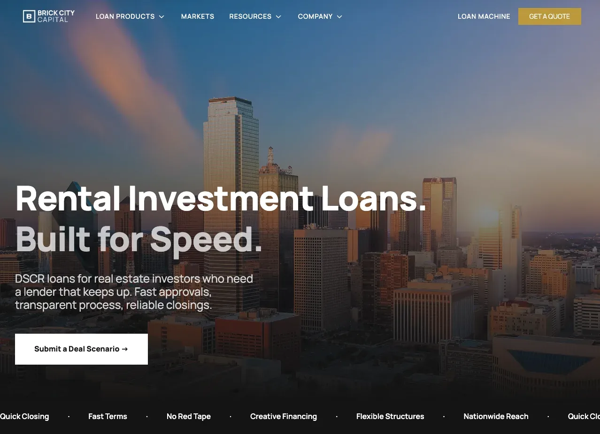</div>
        <div class="callout-list">
          <div class="callout"><span class="dot dot--ux"></span><span class="ct body-md"><b>The visual language is institutional and bold,</b> conveying the experienced, hands-on lender that we are</span></div>
          <div class="callout"><span class="dot dot--ux"></span><span class="ct body-md"><b>The layout is sharp and without any fluff,</b> since the users are professionals who make quick decisions</span></div>
        </div>
      </div>
      <div class="gallery gallery--two">
        <div class="frame has-img">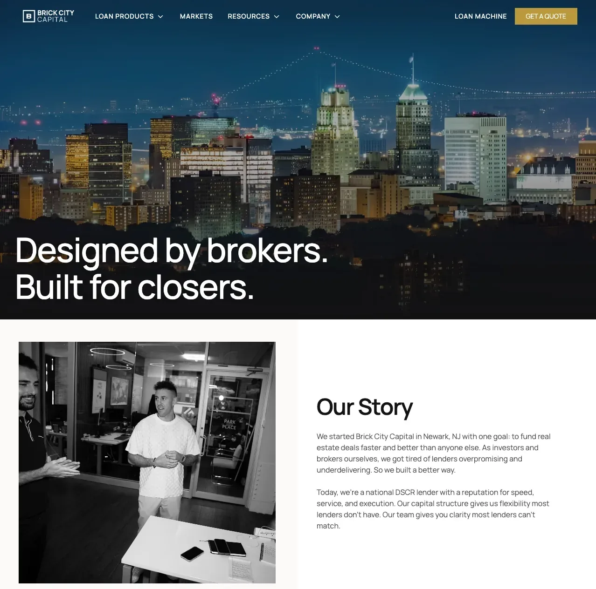</div>
        <div class="frame has-img">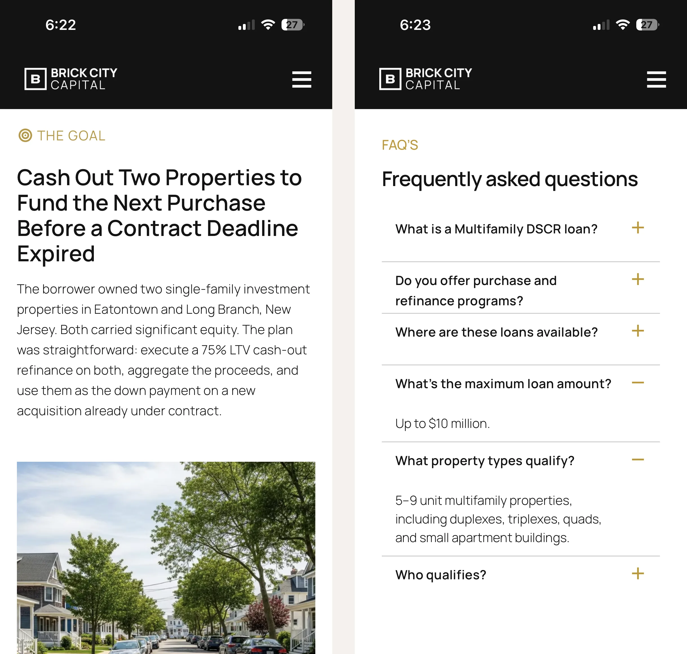</div>
      </div>
      <p class="caption gallery-note">The brand and some mobile pages.</p>
      <div class="section-shot">
        <div class="diagram-title">The system every page is built from</div>
        <div class="frame has-diagram">
          <svg viewBox="0 -10 1200 566" xmlns="http://www.w3.org/2000/svg" role="img"
             aria-label="Brick City Capital design system: six colors that every page calls by name, a Manrope type scale from 96px display down to 12px, and the shipped components">

          <!-- ================= COLOR ================= -->
          <text class="ds-col" x="0" y="12">Color</text>
          <line class="ds-rule" x1="0" y1="26" x2="352" y2="26"/>
          <rect class="ds-sw" x="0" y="62" width="26" height="26" fill="#FFFFFF"/>
          <text class="ds-tok" x="38" y="74">White</text>
          <text class="ds-hex" x="38" y="87">#FFFFFF</text>
          <rect class="ds-sw" x="0" y="100" width="26" height="26" fill="#fcf9f8"/>
          <text class="ds-tok" x="38" y="112">Off white</text>
          <text class="ds-hex" x="38" y="125">#fcf9f8</text>
          <rect class="ds-sw" x="0" y="138" width="26" height="26" fill="#ebe7e7"/>
          <text class="ds-tok" x="38" y="150">Light warm gray</text>
          <text class="ds-hex" x="38" y="163">#ebe7e7</text>
          <rect class="ds-sw" x="0" y="176" width="26" height="26" fill="#131313"/>
          <text class="ds-tok" x="38" y="188">Near black</text>
          <text class="ds-hex" x="38" y="201">#131313</text>
          <rect class="ds-sw" x="0" y="214" width="26" height="26" fill="#BC983B"/>
          <text class="ds-tok" x="38" y="226">Brand gold</text>
          <text class="ds-hex" x="38" y="239">#BC983B</text>
          <rect class="ds-sw" x="0" y="252" width="26" height="26" fill="#5C5551"/>
          <text class="ds-tok" x="38" y="264">Secondary text</text>
          <text class="ds-hex" x="38" y="277">#5C5551</text>

          <!-- ================= TYPE ================= -->
          <text class="ds-col" x="424" y="12">Type</text>
          <line class="ds-rule" x1="424" y1="26" x2="776" y2="26"/>
          <text class="ds-specimen" x="424" y="96">Aa</text>
          <text class="ds-note" x="530" y="72">Manrope</text>
          <text class="ds-note" x="530" y="90">weights 400 to 700</text>
          <line class="ds-hair" x1="424" y1="120" x2="776" y2="120"/>
          <text class="ds-tok" x="424" y="146">Display</text>
          <text class="ds-hex" x="776" y="146" text-anchor="end">96px / 700</text>
          <text class="ds-tok" x="424" y="180">Heading 1</text>
          <text class="ds-hex" x="776" y="180" text-anchor="end">72px / 700</text>
          <text class="ds-tok" x="424" y="214">Heading 2</text>
          <text class="ds-hex" x="776" y="214" text-anchor="end">48px / 600</text>
          <text class="ds-tok" x="424" y="248">Heading 3</text>
          <text class="ds-hex" x="776" y="248" text-anchor="end">40px / 600</text>
          <text class="ds-tok" x="424" y="282">Heading 4</text>
          <text class="ds-hex" x="776" y="282" text-anchor="end">36px / 500</text>
          <text class="ds-tok" x="424" y="316">Heading 5</text>
          <text class="ds-hex" x="776" y="316" text-anchor="end">24px / 600</text>
          <text class="ds-tok" x="424" y="350">Heading 6</text>
          <text class="ds-hex" x="776" y="350" text-anchor="end">20px / 500</text>
          <text class="ds-tok" x="424" y="384">Body large</text>
          <text class="ds-hex" x="776" y="384" text-anchor="end">24px / 400</text>
          <text class="ds-tok" x="424" y="418">Body</text>
          <text class="ds-hex" x="776" y="418" text-anchor="end">16px / 400</text>
          <text class="ds-tok" x="424" y="452">Body small</text>
          <text class="ds-hex" x="776" y="452" text-anchor="end">14px / 400</text>
          <text class="ds-tok" x="424" y="486">Caption</text>
          <text class="ds-hex" x="776" y="486" text-anchor="end">12px / 400</text>

          <!-- ================= COMPONENTS ================= -->
          <text class="ds-col" x="848" y="12">Components</text>
          <line class="ds-rule" x1="848" y1="26" x2="1200" y2="26"/>

          <!-- gold CTA, as it ships in the nav -->
          <rect class="ds-gold" x="848" y="44" width="130" height="34"/>
          <text class="ds-btn-light" x="913" y="65">GET A QUOTE</text>
          <text class="ds-cls" x="988" y="65">square, no radius</text>

          <!-- primary button, white on dark -->
          <rect class="ds-darkchip" x="848" y="98" width="352" height="62"/>
          <rect class="ds-white" x="866" y="112" width="122" height="34"/>
          <text class="ds-btn-dark" x="927" y="133">Submit a deal</text>
          <text class="ds-cls is-ondark" x="1000" y="134">Manrope 700, 1rem</text>

          <!-- section label -->
          <text class="ds-eyebrow" x="848" y="196">LOAN PRODUCT</text>
          <text class="ds-cls" x="848" y="214">uppercase, tracked, in gold</text>
          <line class="ds-hair" x1="848" y1="230" x2="1200" y2="230"/>

          <!-- card -->
          <rect class="ds-card" x="848" y="248" width="352" height="98"/>
          <text class="ds-card-h" x="866" y="278">Non-Warrantable Condos</text>
          <rect class="ds-line" x="866" y="294" width="300" height="5"/>
          <rect class="ds-line" x="866" y="307" width="272" height="5"/>
          <rect class="ds-line" x="866" y="320" width="196" height="5"/>
          <text class="ds-cls" x="848" y="362">card on a tinted surface, 1px border</text>

          <!-- stat row -->
          <line class="ds-hair" x1="848" y1="392" x2="1200" y2="392"/>
          <text class="ds-stat-l" x="848" y="416">LOAN AMOUNT</text>
          <text class="ds-stat-v" x="1195" y="418">$1.05M</text>
          <line class="ds-hair" x1="848" y1="432" x2="1200" y2="432"/>
          <text class="ds-stat-l" x="848" y="456">TIME TO CLOSE</text>
          <text class="ds-stat-v" x="1195" y="458">16 Days</text>
          <line class="ds-hair" x1="848" y1="472" x2="1200" y2="472"/>
          <text class="ds-cls" x="848" y="494">stat row, label left and value flush right</text>
        </svg>
        </div>
        <p class="caption gallery-note">A mostly monotone design language with gold accents that make
        CTAs stand out. This is also what makes the next section possible: large groups of pages for SEO
        are built with this design system.</p>
      </div>
    </div></div>
  </section>

  <!-- BEAT 2 / SEO -->
  <section class="section beat beat--tint">
    <div class="padding-global"><div class="container-large">
      <div class="beat-eyebrow ui-label"><span class="idx">02</span> SEO</div>
      <div class="intro-cols">
        <h2 class="headline-lg beat-head">Then, we needed people to easily find it.</h2>
        <div class="intro-body">
        <p class="body-lg beat-copy">
          Brokers and investors search by loan product and by their market, comparing lenders as they go.
          So I built 46 state-specific market pages, each one answering the DSCR lending questions specific
          to that state. Each page is structured using the same framework for consistency, with the
          behind-the-scenes groundwork to rank on Google and stay indexed.
        </p>
        </div>
      </div>
      <div class="anchor">
        <div class="frame is-anchor has-img is-exact">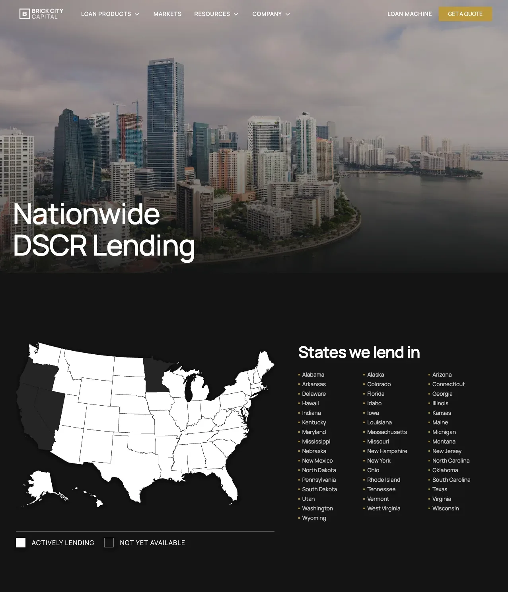</div>
        <div class="callout-list">
          <div class="callout"><span class="dot dot--growth"></span><span class="ct body-md"><b>Our coverage is shown first,</b> because a broker or borrower checks whether we lend in their state before anything else</span></div>
          <div class="callout"><span class="dot dot--growth"></span><span class="ct body-md"><b>The map is the entry point</b> to every market page, so coverage and search intent share the same section</span></div>
          <div class="callout"><span class="dot dot--growth"></span><span class="ct body-md"><b>The content is researched per state,</b> because DSCR rules, limits and timelines can be pretty different</span></div>
        </div>
      </div>
      <div class="section-shot">
        <div class="diagram-title">The same framework applied to two more states</div>
        <div class="states3">
          <figure class="state-item">
            <div class="frame has-img">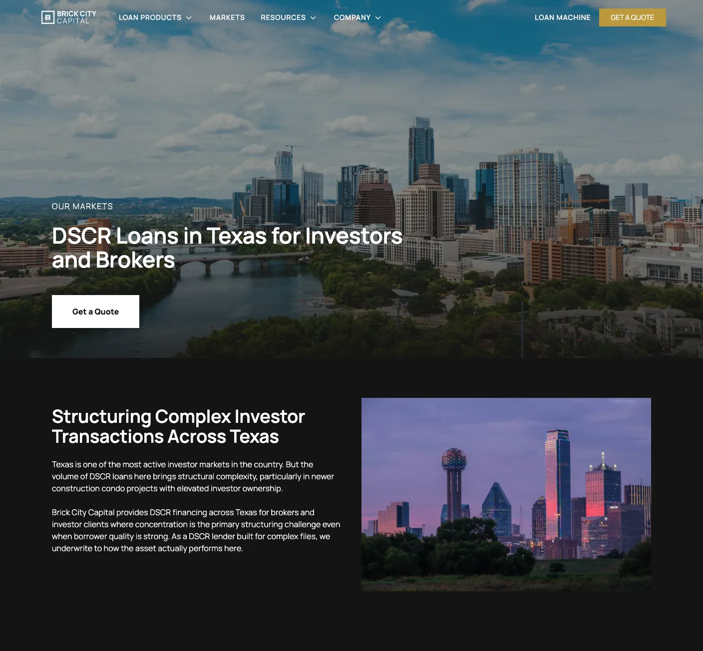</div>
            <figcaption>
              <span class="ui-label">Texas</span>
              <p class="state-quote">&ldquo;structural complexity, particularly in newer construction condo projects with elevated investor ownership&rdquo;</p>
            </figcaption>
          </figure>
          <figure class="state-item">
            <div class="frame has-img">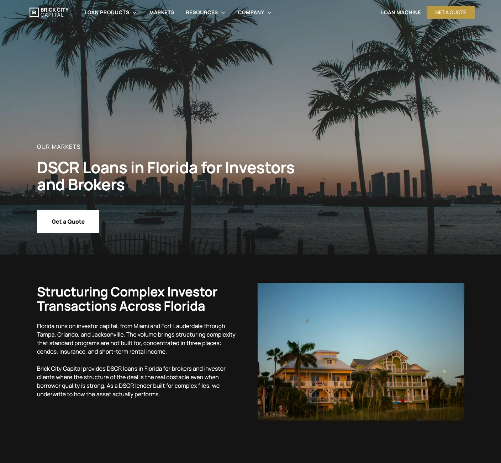</div>
            <figcaption>
              <span class="ui-label">Florida</span>
              <p class="state-quote">&ldquo;concentrated in three places: condos, insurance, and short-term rental income&rdquo;</p>
            </figcaption>
          </figure>
        </div>
        <p class="caption gallery-note">Every market page goes in depth about the unique characteristics of real
        estate in each state. They also all answer the same baseline questions that investors would have, structured
        similarly so each point is easy to find. For example, Texas, which has become a booming new market for
        investors, is full of brand new construction projects. Florida, a popular vacation destination, is full of
        short-term rentals and Airbnbs, with unique insurance requirements because of tropical weather.</p>
      </div>
      <div class="section-shot">
        <div class="diagram-title">A single state page broken down section by section</div>
        <div class="teardown">
          <div class="td-page">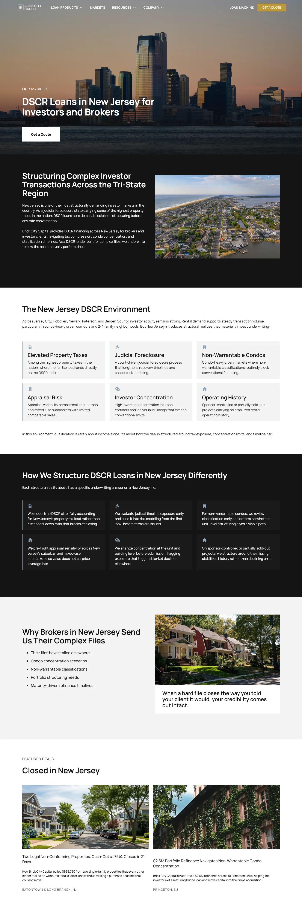</div>
          <div class="td-notes">
            <div class="td-note" style="top: 18.01%">
              <span class="td-idx ui-label">01</span>
              <span class="ui-label td-name">That state&#39;s DSCR environment</span>
              <p class="body-md">What the market actually looks like for an investor, opened on that state specifically.</p>
            </div>
            <div class="td-note" style="top: 31.64%">
              <span class="td-idx ui-label">02</span>
              <span class="ui-label td-name">The structural characteristics, one by one</span>
              <p class="body-md">Tax load, foreclosure process, condo classification, appraisal conditions. Whatever details affect underwriting there.</p>
            </div>
            <div class="td-note" style="top: 49.93%">
              <span class="td-idx ui-label">03</span>
              <span class="ui-label td-name">How we underwrite each one</span>
              <p class="body-md">Every characteristic above gets its own paired answer, so investors know we can handle each one.</p>
            </div>
            <div class="td-note" style="top: 65.71%">
              <span class="td-idx ui-label">04</span>
              <span class="ui-label td-name">Why brokers send complex files here</span>
              <p class="body-md">A final summary to win customers&#39; trust, in the state&#39;s own terms.</p>
            </div>
            <div class="td-note" style="top: 81.35%">
              <span class="td-idx ui-label">05</span>
              <span class="ui-label td-name">Deals we closed in that state</span>
              <p class="body-md">Links out to relevant case studies, so the page ends on evidence that builds trust.</p>
            </div>
          </div>
        </div>
      </div>
            <div class="gallery gallery--two">
        <div class="frame has-img">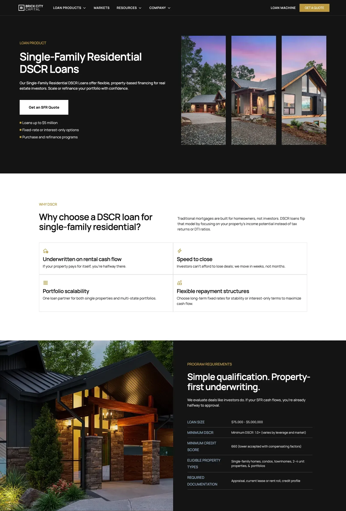</div>
        <div class="frame has-img">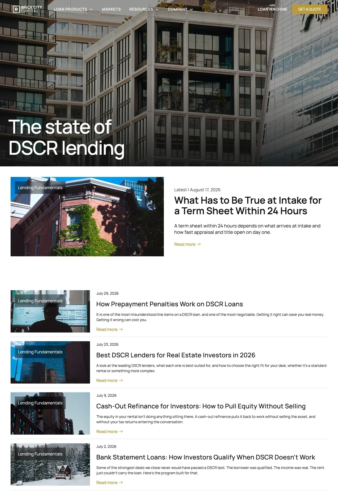</div>
      </div>
      <p class="caption gallery-note">Product pages catch brokers searching by loan type, and the resource library catches the ones
      still figuring out which product fits their scenario.</p>
    </div></div>
  </section>

  <!-- BEAT 3 / EMAIL & MARKETING -->
  <section class="section beat">
    <div class="padding-global"><div class="container-large">
      <div class="beat-eyebrow ui-label"><span class="idx">03</span> Email &amp; Marketing</div>
      <div class="intro-cols">
        <h2 class="headline-lg beat-head">Next, we needed a way to stay top of mind for people who weren't ready yet.</h2>
        <div class="intro-body">
        <p class="body-lg beat-copy">
          I built a growth email system that keeps Brick City in front of brokers between deals. This way, we're
          more likely to be thought of first when they're looking for lenders. Some examples are
          newsletters and deal-review campaigns written in a clean, institutional voice. I also rebuilt
          the cold-email infrastructure end to end, isolating the sending domain and verifying the
          audience lists, to ensure that campaigns actually reach customer inboxes.
        </p>
        <p class="body-lg beat-copy">
          The deal review campaigns are built on real closings. We publish deal reviews on the website,
          each one a funded deal and the constraint that made it difficult, and those become the
          material the emails point to.
        </p>
        <p class="body-lg beat-copy">
          A broker deciding where to send a file wants to know whether we have handled one like it
          before. That's what the deal reviews reinforce. Each one names the property and the constraint
          that made it complicated, walks through the closing process, with our problem solving logic,
          and ends with our VP explaining the decisions in his own words. We publish these on a schedule
          that acts as a deal history, showing readers not only that we can handle a wide variety of
          scenarios, but we also close deals frequently.
        </p>
        </div>
      </div>
      <div class="anchor">
        <div class="gallery">
          <div class="frame has-img">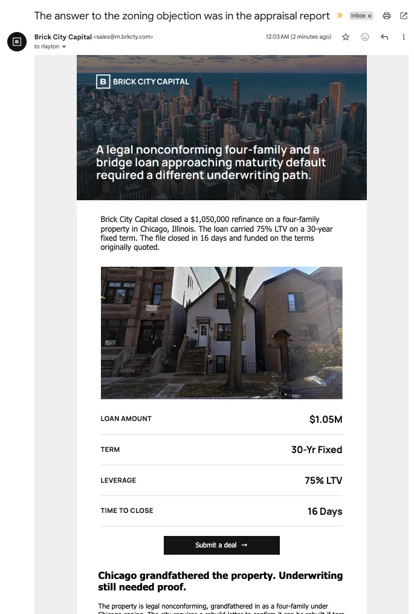</div>
          <div class="frame has-img">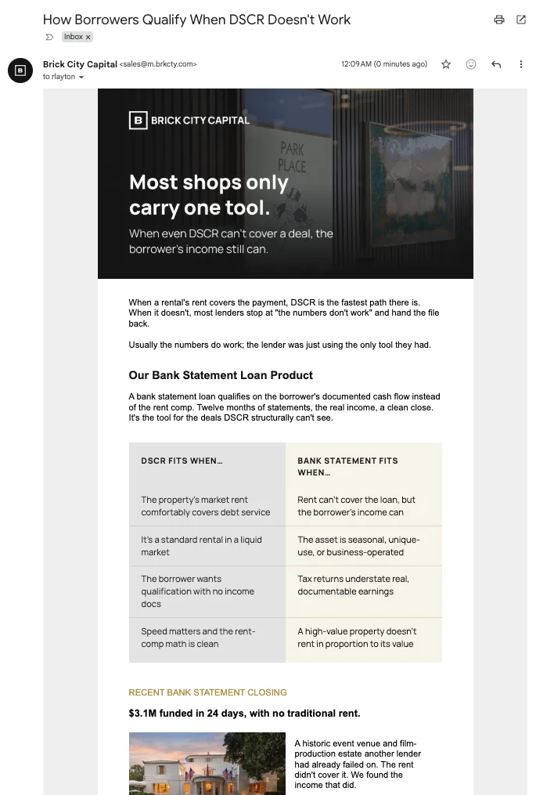</div>
          <div class="frame has-img">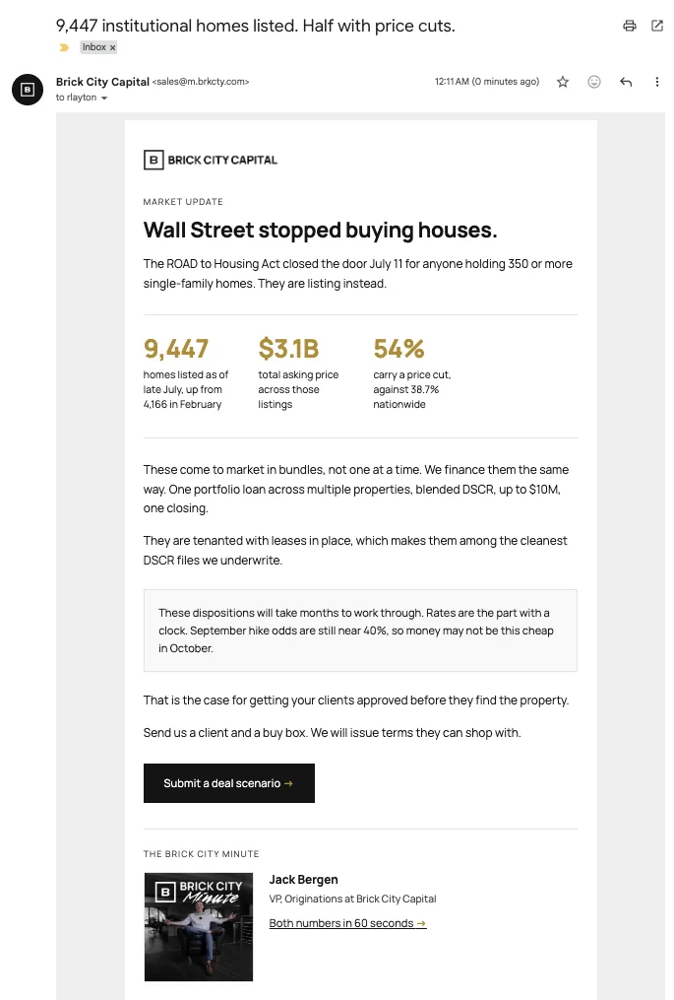</div>
        </div>
        <div class="callout-list">
          <div class="callout"><span class="dot dot--growth"></span><span class="ct body-md"><b>Three different email examples:</b> a closed deal, a product description, and a market update. They add value for the reader, and each has a differently framed CTA to bring in business</span></div>
          <div class="callout"><span class="dot dot--growth"></span><span class="ct body-md"><b>Media and content are interconnected:</b> the deal review email links to the deal review blog on the site, our product page is linked in the product explainer email, and our social media content covering the same story is linked to the market update video</span></div>
        </div>
      </div>
      <div class="section-shot">
        <div class="diagram-title">Building email sending from the ground up</div>
        <div class="builds">
          <div class="build-item">
            <div class="build-item-title">Isolated sending domain</div>
            <p class="body-md">Created a subdomain to send email campaigns from, to ensure any hits in reputation don't
            affect internal emails and personal transactional emails.</p>
          </div>
          <div class="build-item">
            <div class="build-item-title">Authenticated</div>
            <p class="body-md">SPF, DKIM and DMARC set up on the sending domain. This way, a mailbox provider can verify
            that a send is really from us so we stay out of spam.</p>
          </div>
          <div class="build-item">
            <div class="build-item-title">IP warmed on a schedule</div>
            <p class="body-md">Ramped up sending volume on an 8-week schedule so mailbox providers had time to recognize
            the new IP and domain as a normal sender.</p>
          </div>
          <div class="build-item">
            <div class="build-item-title">Lists verified through NeverBounce</div>
            <p class="body-md">Verified every email address before sends, since bounces are one of the biggest red flags
            for a mailbox provider.</p>
          </div>
        </div>
      </div>
      <div class="section-shot">
        <div class="diagram-title">A deal review from start to finish</div>
        <div class="gallery gallery--two">
          <div class="frame has-img">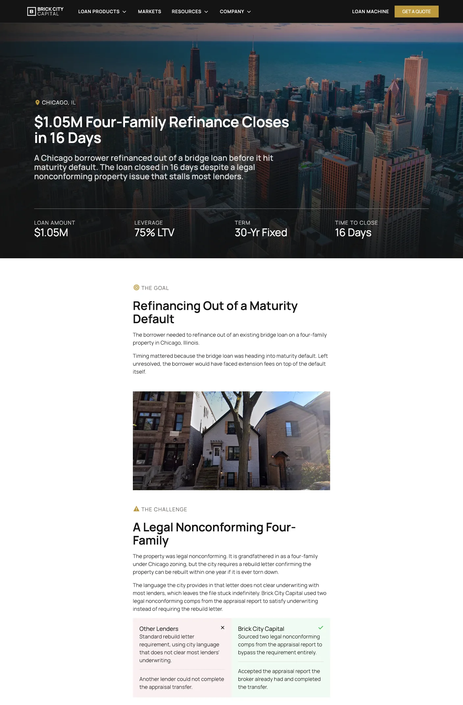</div>
          <div class="frame has-img">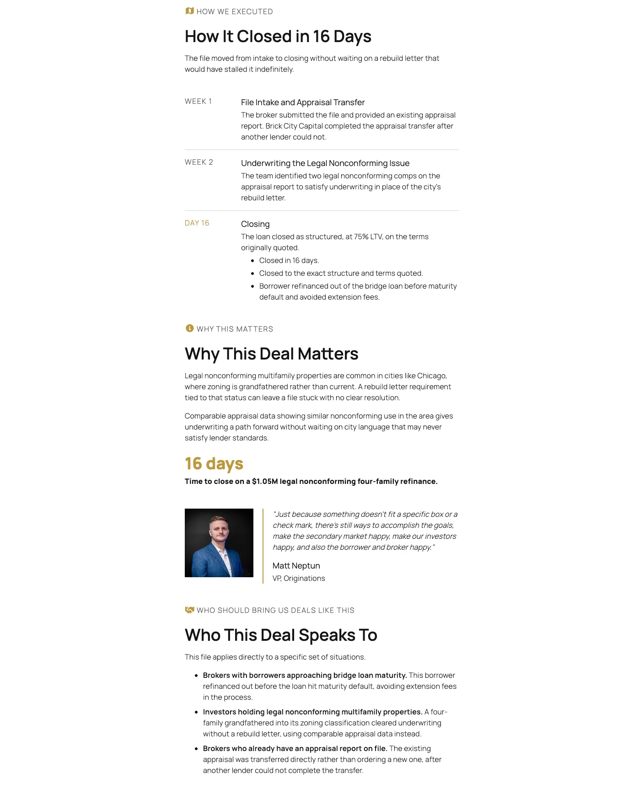</div>
        </div>
        <div class="callout-list">
          <div class="callout"><span class="dot dot--growth"></span><span class="ct body-md"><b>The process is walked through in detail,</b> from file intake and appraisal transfer through underwriting to the day it closed</span></div>
          <div class="callout"><span class="dot dot--growth"></span><span class="ct body-md"><b>Each deal review names the specific file's constraint,</b> like a legal nonconforming four-family another lender had already failed to fund</span></div>
          <div class="callout"><span class="dot dot--growth"></span><span class="ct body-md"><b>The VP of Originations signs off each one in his own words,</b> so the claim has a person and face behind it</span></div>
          <div class="callout"><span class="dot dot--growth"></span><span class="ct body-md"><b>It ends by naming who should bring us a deal like this,</b> targeting the broker reading it</span></div>
        </div>
      </div>
      <div class="gallery gallery--two">
        <div class="frame has-img"></div>
        <div class="frame has-img">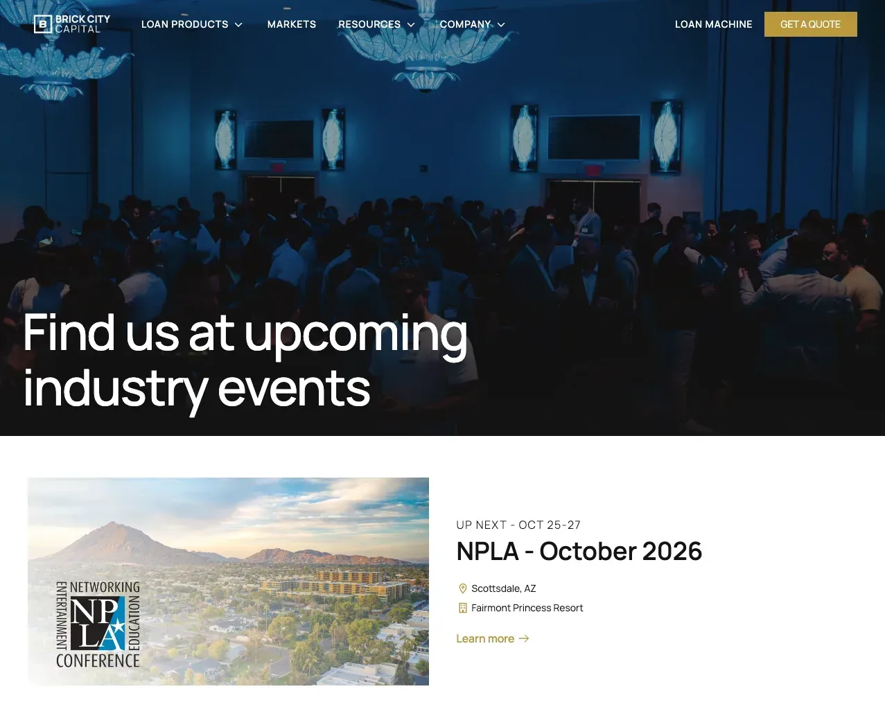</div>
      </div>
      <p class="caption gallery-note">The deal reviews page and a conference schedule page.</p>
    </div></div>
  </section>

  <!-- BEAT 4 / SYSTEMS -->
  <section class="section beat beat--tint">
    <div class="padding-global"><div class="container-large">
      <div class="beat-eyebrow ui-label"><span class="idx">04</span> Systems</div>
      <div class="intro-cols">
        <h2 class="headline-lg beat-head">Finally, we needed infrastructure to make all of it repeatable.</h2>
        <div class="intro-body">
        <p class="body-lg beat-copy">
          A lending company depends on speed and accuracy, so the infrastructure mattered. I built and
          maintained Salesforce architecture across the org and wired up lead attribution, so we know
          which marketing efforts sourced deals.
        </p>
        </div>
      </div>
      <div class="anchor">
        <div class="diagram-title">The lead flow from deal review email to Slack alert</div>
        <div class="frame has-diagram">
          <svg viewBox="0 0 1200 440" xmlns="http://www.w3.org/2000/svg" role="img"
               aria-label="Lead flow: a broker opens a deal review email and clicks through, submits a scenario on the site form which carries the campaign tag in a hidden field, Salesforce keeps it in the original campaign field on the record they already have, and Slack tells the rep what they were reading. The same value, deal-review, appears in all four panels, underlined in gold.">

            <!-- A DIRECT COUNTERPART TO THE LEVERAGE HOMES LEAD-FLOW DIAGRAM, at Ryan's
                 instruction: he compared the two and preferred the Leverage Homes one outright.
                 Copied from it: panel proportions, the small uppercase muted panel header over
                 a hairline, uppercase field labels, light gray input and value bars, a solid
                 accent CTA, one dark filled bar for the categorical field, an outlined pill
                 plus a dot for the human action, handoff arrows between panels, and numbered
                 captions underneath.
                 CHANGED ON PURPOSE, and all brand-correct for BCC: SQUARE corners rather than
                 rx 12 (the design system figure on this same page says "square, no radius"),
                 gold rather than green, Manrope rather than Poppins. Do not unify the corners.
                 ADDED, and the reason this diagram exists: a fourth panel for the email, and a
                 footer band in every panel carrying the campaign tag.
                 TWO CHANNELS, TWO MEANINGS: the handoff arrows at y 180 are warm gray, not
                 gold, because gold is reserved for the tag. Leverage Homes can spend its green
                 on arrows since it has no tag thread to keep legible. BCC cannot. -->

            <!-- 01 DEAL REVIEW EMAIL -->
            <rect class="bc-panel" x="0.75" y="20.75" width="254.5" height="320"/>
            <text class="bc-fl" x="20" y="50">Deal review email</text>
            <line class="bc-rule" x1="20" y1="62" x2="235" y2="62"/>
            <text class="bc-fl" x="20" y="88">Subject</text>
            <rect class="bc-fill" x="20" y="96" width="180" height="12"/>
            <text class="bc-fl" x="20" y="132">Deal review</text>
            <rect class="bc-fill" x="20" y="140" width="215" height="44"/>
            <rect class="bc-accent" x="20" y="208" width="215" height="30"/>
            <text class="bc-btn" x="127.5" y="227" text-anchor="middle">View full deal review</text>
            <line class="bc-rule" x1="20" y1="262" x2="235" y2="262"/>
            <text class="bc-fl" x="20" y="284">In the link</text>

            <line class="bc-arrow" x1="262" y1="180" x2="310" y2="180"/>
            <polyline class="bc-arrow" points="302,173 310,180 302,187"/>

            <!-- 02 SCENARIO FORM -->
            <rect class="bc-panel" x="315.25" y="20.75" width="254.5" height="320"/>
            <text class="bc-fl" x="334.5" y="50">Scenario form</text>
            <line class="bc-rule" x1="334.5" y1="62" x2="549.5" y2="62"/>
            <text class="bc-fl" x="334.5" y="88">Loan amount</text>
            <rect class="bc-fill" x="334.5" y="96" width="215" height="30"/>
            <text class="bc-fl" x="334.5" y="152">Property type</text>
            <rect class="bc-fill" x="334.5" y="160" width="215" height="30"/>
            <rect class="bc-accent" x="334.5" y="208" width="215" height="30"/>
            <text class="bc-btn" x="442" y="227" text-anchor="middle">Submit scenario</text>
            <line class="bc-rule" x1="334.5" y1="262" x2="549.5" y2="262"/>
            <text class="bc-fl" x="334.5" y="284">Hidden field</text>

            <line class="bc-arrow" x1="576" y1="180" x2="624" y2="180"/>
            <polyline class="bc-arrow" points="616,173 624,180 616,187"/>

            <!-- 03 SALESFORCE / BROKER -->
            <rect class="bc-panel" x="629.75" y="20.75" width="254.5" height="320"/>
            <text class="bc-fl" x="649" y="50">Salesforce / broker</text>
            <line class="bc-rule" x1="649" y1="62" x2="864" y2="62"/>
            <text class="bc-fl" x="649" y="88">Broker</text>
            <rect class="bc-fill" x="649" y="96" width="150" height="12"/>
            <text class="bc-fl" x="649" y="132">Company</text>
            <rect class="bc-fill" x="649" y="140" width="180" height="12"/>
            <text class="bc-fl" x="649" y="176">Loan amount</text>
            <rect class="bc-fill" x="649" y="184" width="120" height="12"/>
            <text class="bc-fl" x="649" y="220">Stage</text>
            <rect x="649" y="228" width="140" height="12" fill="#5C5551"/>
            <line class="bc-rule" x1="649" y1="262" x2="864" y2="262"/>
            <text class="bc-fl" x="649" y="284">Original campaign</text>

            <line class="bc-arrow" x1="890" y1="180" x2="938" y2="180"/>
            <polyline class="bc-arrow" points="930,173 938,180 930,187"/>

            <!-- 04 SLACK / DEAL ALERT -->
            <rect class="bc-panel" x="944.25" y="20.75" width="254.5" height="320"/>
            <text class="bc-fl" x="963.5" y="50">Slack / deal alert</text>
            <line class="bc-rule" x1="963.5" y1="62" x2="1178.5" y2="62"/>
            <rect x="963.5" y="84" width="28" height="28" fill="#131313"/>
            <text class="bc-lb" x="1001.5" y="97">Broker reengaged</text>
            <rect class="bc-fill" x="1001.5" y="106" width="110" height="10"/>
            <rect class="bc-fill" x="963.5" y="142" width="215" height="10"/>
            <rect class="bc-fill" x="963.5" y="160" width="180" height="10"/>
            <rect class="bc-fill" x="963.5" y="178" width="145" height="10"/>
            <line class="bc-rule" x1="963.5" y1="200" x2="1178.5" y2="200"/>
            <rect x="963.5" y="214" width="110" height="28" fill="none" stroke="#131313" stroke-width="1.5"/>
            <text class="bc-tag" x="1018.5" y="232" text-anchor="middle">Open record</text>
            <rect class="bc-accent" x="1083.5" y="224" width="7" height="7"/>
            <text class="bc-tag" x="1097.5" y="231">Rep replies</text>
            <line class="bc-rule" x1="963.5" y1="262" x2="1178.5" y2="262"/>
            <text class="bc-fl" x="963.5" y="284">In the alert</text>

            <!-- THE TAG. It used to be four outlined chips joined by one gold thread with
                 arrowheads between them. Ryan cut the thread: the four panels already sit in a
                 left-to-right row with handoff arrows at y 180, so a second connector on the
                 same axis said the same thing twice. The repeated word is what carries the
                 idea, and a gold underline is enough to mark it as one value travelling.
                 The WHERE labels still sit ABOVE the tag rather than beside it, so the column
                 reads label-then-value like every other field in the panels. -->
            <text class="bc-tag bc-thread" x="20" y="304">deal-review</text>
            <text class="bc-tag bc-thread" x="334.5" y="304">deal-review</text>
            <text class="bc-tag bc-thread" x="649" y="304">deal-review</text>
            <text class="bc-tag bc-thread" x="963.5" y="304">deal-review</text>

            <!-- CAPTIONS, same pattern as the Leverage Homes diagram -->
            <text class="bc-step" x="0" y="388">01</text>
            <text class="bc-cap" x="0" y="414">Broker opens a deal review</text>
            <text class="bc-step" x="314.5" y="388">02</text>
            <text class="bc-cap" x="314.5" y="414">They submit a scenario</text>
            <text class="bc-step" x="629" y="388">03</text>
            <text class="bc-cap" x="629" y="414">Salesforce keeps the campaign</text>
            <text class="bc-step" x="943.5" y="388">04</text>
            <text class="bc-cap" x="943.5" y="414">Slack tells the rep what they read</text>
          </svg>
        </div>
        <div class="callout-list">
          <div class="callout"><span class="dot dot--systems"></span><span class="ct body-md"><b>The tag is captured at the form</b> and written onto the Salesforce record, so the source is stored on the deal</span></div>
          <div class="callout"><span class="dot dot--systems"></span><span class="ct body-md"><b>The Slack alert names the campaign and the link,</b> so a rep knows what brought a broker back before opening the record</span></div>
          <div class="callout"><span class="dot dot--systems"></span><span class="ct body-md"><b>Reengagement is tracked on the already existing Salesforce record,</b> so activity shows in one place</span></div>
          <div class="callout"><span class="dot dot--systems"></span><span class="ct body-md"><b>Marketing spend becomes measurable,</b> because a funded deal traces back to the email that started it</span></div>
        </div>
      </div>
    </div></div>
  </section>

  <!-- CLOSE (dark) -->
  <section class="section close">
    <div class="padding-global"><div class="container-large">
      <h2 class="headline-lg">I created 4 connected layers that turn an unfamiliar lender into a broker's default choice.</h2>
      <p class="body-lg">
      This is live and still evolving. From finding us to pricing a deal, I wanted a broker's or
      investor's whole experience to match the speed and transparency the brand promises.
    </p>
      <div class="close-actions">
        <a href="leverage-homes.html" class="btn btn-primary ui-label">Next: Leverage Homes</a>
        <a href="index.html#work" class="btn btn-ghost ui-label">Back to work</a>
      </div>
    </div></div>
  </section>

  <!-- CREDITS -->
  <section class="section credits">
    <div class="padding-global"><div class="container-large">
      <p class="caption">
        Brand and creative developed in collaboration with our Creative Marketing Manager. Website, UX, SEO, email
        systems, and lead-related Salesforce architecture owned and executed by me.
      </p>
    </div></div>
  </section>

</main>


<footer class="section footer" id="contact">
  <div class="padding-global">
    <div class="container-large">
      <div class="footer-inner">
        <div class="lets">Let&rsquo;s get in touch</div>
        <div>
          <div class="connect">Connect</div>
          <div class="links caption">
            <a href="https://www.linkedin.com/in/laytonryan" rel="noopener">LinkedIn</a>
            <a href="mailto:ryanlaytondesign@gmail.com">Email</a>
          </div>
        </div>
      </div>
    </div>
  </div>
</footer>

<script>
  (function(){
    var nav = document.getElementById('nav');
    if (!nav) return;
    function onScroll(){ nav.classList.toggle('is-scrolled', window.scrollY > 20); }
    onScroll();
    window.addEventListener('scroll', onScroll, { passive: true });
  })();
</script>
